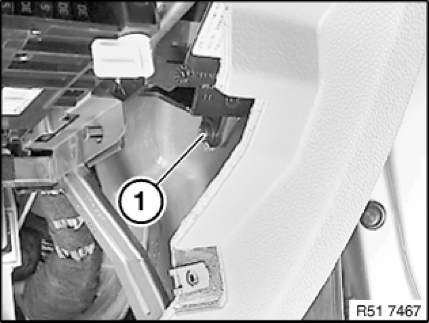
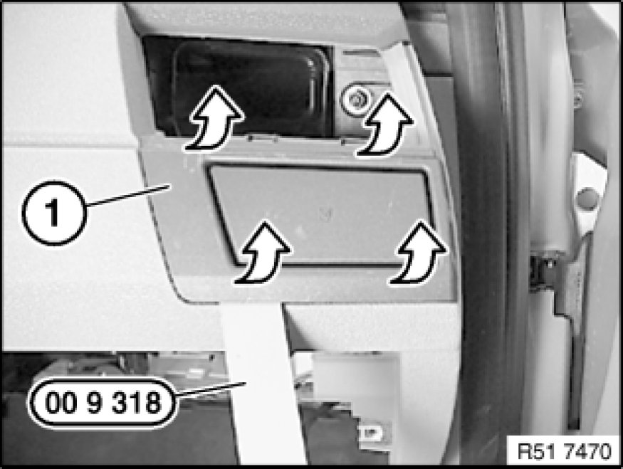
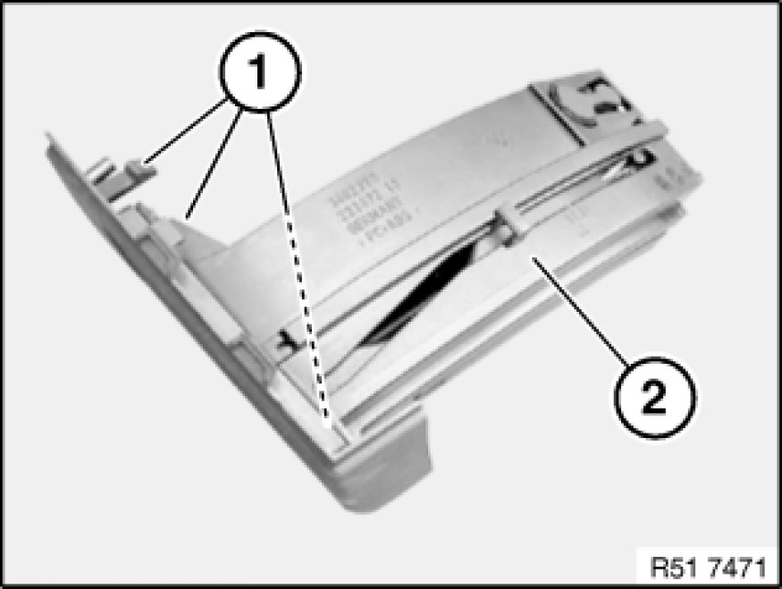

51 16 194 - Removing and installing/replacing front side left or right cup holder
51 16 194 - Removing and installing/replacing front side left or right cup holder

Special tools required:
- 00 9 318 00 9 318 Multipurpose Wedge

Necessary preliminary tasks:
- Remove right glovebox 51 16 366 Removing and Installing Right Glovebox With Housing
- Remove right fresh-air grill Removing and Installing/Replacing Right Fresh-Air Grill

Release screw (1) on instrument panel at bottom.

Unclip cup holder (1) with special tool 00 9 318 00 9 318 Multipurpose Wedge all round and remove in direction of arrow.

Installation:
Catches (1) on cup holder (2) must not be damaged or missing.